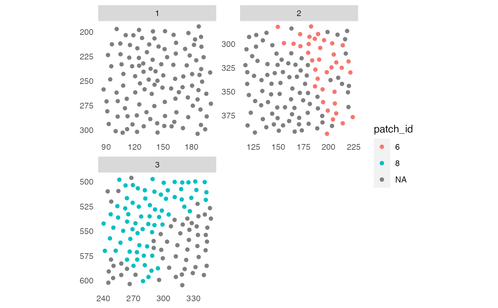
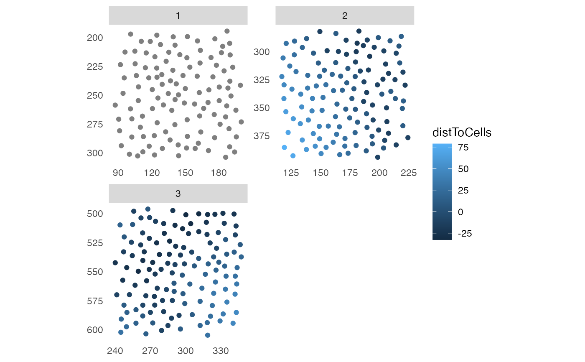

R/minDistToCells.R
minDistToCells.RdFunction to return the distance of the closest cell of interest for each cell in the data. In the case of patched/clustered cells negative distances are returned by default which indicate the distance of the cells of interest to the closest cell that is not of the type of cells of interest.
minDistToCells(
object,
x_cells,
img_id,
name = "distToCells",
coords = c("Pos_X", "Pos_Y"),
return_neg = TRUE,
BPPARAM = SerialParam()
)a SingleCellExperiment or SpatialExperiment
object
logical vector of length equal to the number of cells
contained in object. TRUE entries define the cells to which
distances will be calculated.
single character indicating the colData(object) entry
containing the unique image identifiers.
character specifying the name of the colData entry to safe
the distances in.
character vector of length 2 specifying the names of the
colData (for a SingleCellExperiment object) or the
spatialCoords entries of the cells' x and y locations.
logical indicating whether negative distances are to be returned for the distances of patched/spatially clustered cells.
a BiocParallelParam-class object
defining how to parallelize computations.
returns an object of class(object) containing a new column
entry to colData(object)[[name]].
library(cytomapper)
data(pancreasSCE)
# Build interaction graph
pancreasSCE <- buildSpatialGraph(pancreasSCE, img_id = "ImageNb",
type = "expansion",threshold = 20)
# Detect patches of "celltype_B" cells
pancreasSCE <- patchDetection(pancreasSCE,
img_id = "ImageNb",
patch_cells = pancreasSCE$CellType == "celltype_B",
colPairName = "expansion_interaction_graph",
min_patch_size = 20,
expand_by = 1)
plotSpatial(pancreasSCE,
img_id = "ImageNb",
node_color_by = "patch_id",
scales = "free")

# Distance to celltype_B patches
pancreasSCE <- minDistToCells(pancreasSCE,
x_cells = !is.na(pancreasSCE$patch_id),
coords = c("Pos_X","Pos_Y"),
img_id = "ImageNb")
plotSpatial(pancreasSCE,
img_id = "ImageNb",
node_color_by = "distToCells",
scales = "free")
